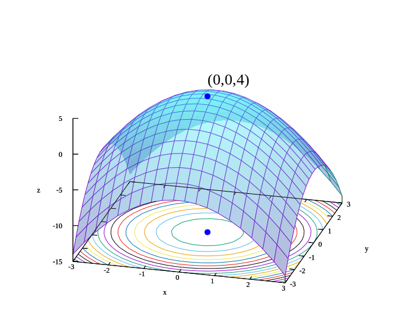

Term: Spring 2020 | Units: 3 | Section: 01 | Students enrolled: 50 | Lectures: Sun, Tue 9:00–10:30am @ Aleph 23 | Exam Date/Time: 7/20/20 11:00am | Prerequisite: Linear Algebra I

Convex sets, functions, and optimization problems. The basics of convex analysis and theory of convex programming: optimality conditions, duality theory, theorems of alternative, and applications. Least-squares, linear and quadratic programs, semidefinite programming, and geometric programming. Numerical algorithms for smooth and equality constrained problems; interior-point methods for inequality constrained problems. Applications to systems biology, computational geometry, statistics, machine learning, and electrical engineering.
Announcements
Welcome to 22494 Convex Optimization, Spring semester 2020!
This course was originally developed by Stephen P. Boyd. We will use the same course text and many of the same course materials.
All lectures and office hours during Week 3 are canceled due to the coronavirus outbreak and will be rescheduled for a later date.
We will resume our class virtually amid novel coronavirus fears via webinar. All TA session will be held via webinar too.
Office hours have been updated to reflect new online office hours.
Homework 5 is posted. That finishes up the first round of assignments. There will be no lectures and homeworks on weeks 7 & 8 to observe the Nowruz holiday. Our class will resume on Sunday, April 5th. We recommend that you read sections of the book that you may have missed, or re-read sections that still confuse you during the break. We also recommend that you study the documentation for CVX*, skipping only the very driest sections. In particular, we expect you to know the DCP rules.
Due to the ongoing situation relating to the COVID-19 coronavirus outbreak, the in-class midterm quiz has been canceled in the best interests of students and is replaced by a pair of projects.